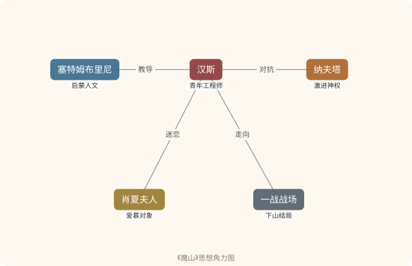

魔山
一、基本信息
| 作者 | 托马斯·曼 |
|---|---|
| 成书/出版 | 1924年出版（Britannica：Der Zauberberg in 1924） The Magic Mountain (novel by Thomas Mann) — Encyclopaedia Britannica（百科全书） |
| 国别/地区 | 德国 |
| 时代 | 现当代 · 20世纪初 |
| 体裁 | 长篇小说 |
| 语言 | 德语 |

《魔山》思想角力图（人物关系图）
二、创作背景
Britannica：主题源自早期母题——青年工程师汉斯·卡斯托尔普到达沃斯疗养院探望表兄……'But the sanatorium comes to be the spiritual reflection of the possibilities and dangers of the actual world'（疗养院成为现实世界的可能与危险的精神映像——Britannica）。
一战前欧洲文明的总寓言（通说）。
三、内容脉络
汉斯『计划三周』的探病变成七年（通说）。
两位导师：塞特姆布里尼（启蒙/人文）与纳夫塔（激进/神权）的思想拉锯（通说）。
结尾：汉斯下山赴一战战场——'decides for life and service to his people'（Britannica：以略带怀疑却人道的姿态，决定为生命与同胞服务）。
四、主要人物表
| 人物 | 身份 | 说明 |
|---|---|---|
| 汉斯·卡斯托尔普 | 青年工程师 | 普通的 Seeker（通说） |
| 塞特姆布里尼 | 意大利人文主义者 | 启蒙的声音 |
| 纳夫塔 | 耶稣会士 | 激进与虚无 |
| 克拉芙迪娅（肖夏夫人） | 俄国病人 | 爱慕对象 |
五、主题与艺术特点
- 时间：山中七年与主观时间体验（通说）。
- 疾病与文明：疗养院=战前欧洲缩影（Britannica）。
- 教育小说：思想的成年礼（通说）。
六、影响与评论
- Britannica：Castorp 原打算住几周，因发现病症逗留七年，直至一战爆发（原文转述）。
The Magic Mountain (novel by Thomas Mann) — Encyclopaedia Britannica（百科全书） - Britannica：'In this great work Mann formulates with remarkable insight the fateful choices facing Europe'（以卓越洞见提出欧洲面临的决定性抉择）。
Thomas Mann — Encyclopaedia Britannica（百科全书） - Britannica（作者页）：1929年诺贝尔文学奖——魔山时期为其创作巅峰之一。
Thomas Mann — Encyclopaedia Britannica（百科全书）
七、阅读建议
难点
- 厚达千页的思想辩论。
- 时间感：文字刻意『拉长』时间。
- 钱鸿嘉译本（上海译文出版社，通说待核）。
- 杨武能译本（译林出版社，通说待核）。
可先读《布登勃洛克一家》入门曼的风格。
八、待核实
- 1924年出版（S. Fischer 两卷本说）待核。
- 两位导师辩论的思想史背景考订待核。
- 瓦格纳音乐母题待核。
本页主要来源
- The Magic Mountain (novel by Thomas Mann) — Encyclopaedia Britannica（百科全书）
- Thomas Mann — Encyclopaedia Britannica（百科全书）
托马斯·曼的其他收录作品：魔山